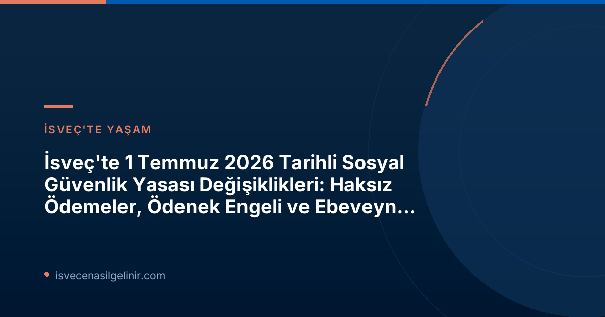

1 Temmuz 2026'dan İtibaren Yürürlüğe Giren Yeni Düzenlemeler
İsveç Riksdag'ı (Parlamento) tarafından alınan kararlarla, sosyal sigorta sistemini ilgilendiren üç temel yasa değişikliği resmen yürürlüğe girdi. Bu değişikliklerden ikisi, yanlış ödemeleri ve sosyal yardım dolandırıcılığını azaltmayı amaçlarken, üçüncüsü ebeveynler için önemli bir başvuru kolaylığı getiriyor.Yanlış Ödemelerde Yaptırım Ücreti (Sanktionsavgift)
Försäkringskassan ve Pensionsmyndigheten (Emeklilik Kurumu), 1 Temmuz 2026 tarihinden itibaren, yanlış bilgi veren veya değişen koşulları bildirmeyerek haksız ödemelere neden olan kişilere yaptırım ücreti uygulama yetkisine sahip olacak. Bu düzenlemenin temel amacı, yanlış yapılan ödeme sayısını azaltmak ve refah sistemlerine olan güveni güçlendirmektir.Yaptırım Ücreti Detayları
| Uygulama Alanı | Ücret Oranı | Minimum Ücret | Yürürlük Tarihi |
|---|---|---|---|
| Yanlış beyanlar veya bildirim eksikliği nedeniyle oluşan haksız ödemeler | Yanlış ödenen ve geri ödenmesi gereken miktarın %25'i | En az 2.368 SEK (fiyat baz miktarının %4'ü) | 1 Temmuz 2026 |
Bu ücret, haksız yere ödenen ve geri ödenmesi gereken miktarın %25'i oranında uygulanacaktır. Ayrıca, ödenecek ücretin her zaman en az 2.368 İsveç Kronu (fiyat baz miktarının %4'ü) olması gerektiği belirtilmiştir.
Haksız Ödemeler İçin Maksimum 3 Yıl Süreli Ödenek Engeli (Bidragsspärr)
Sosyal sigorta sisteminin kötüye kullanımını engellemek amacıyla yeni bir yaptırım olan "ödenek engeli" uygulaması da başladı. Kasıtlı olarak veya ağır ihmal sonucu haksız ödemelere neden olan kişiler, duruma göre birkaç aydan üç yıla kadar değişen sürelerle belirli sosyal yardımlardan men edilebilir. Bu düzenleme, sistemli suiistimallere karşı daha güçlü bir koruma sağlamayı hedeflemektedir.Ebeveyn Parası (Föräldrapenning) Başvurusunda Kolaylık: Ön Bildirim Şartı Kalktı
Ebeveynler için sevindirici bir haber olarak, 1 Temmuz 2026 tarihinden itibaren ebeveyn parası (föräldrapenning) başvurularında 'ön bildirim' şartı kaldırıldı. Artık doğrudan Försäkringskassan'a ebeveyn parası başvurusunda bulunmak yeterli olacak. Önceden, ebeveyn iznine ayrılmak isteyen kişilerin öncelikle bildirimde bulunup daha sonra başvuru yapması gerekiyordu. Hükümet bu gerekliliği ortadan kaldırarak başvuru sürecini basitleştirdi.Bu Değişiklikler Sizi Nasıl Etkileyecek?
Bu yasa değişiklikleri, İsveç'te yaşayan herkes için önemli sonuçlar doğurabilir. Özellikle, Försäkringskassan'dan sosyal yardım alan veya alacak olan kişilerin doğru ve eksiksiz bilgi verme sorumluluğu daha da artırılmıştır. Yanlış beyanlar veya bildirim eksiklikleri ciddi mali yaptırımlarla sonuçlanabileceği için, her zaman güncel bilgilere sahip olmak ve Försäkringskassan ile iletişimi düzenli tutmak hayati önem taşımaktadır. Ebeveynler için ise, föräldrapenning başvuru sürecindeki kolaylaştırma, bürokratik yükü azaltarak daha hızlı ve pratik bir deneyim sunacaktır.İsveç Sosyal Sigorta Sistemine Güvenin Önemi
İsveç devleti, sosyal sigorta sistemlerinin doğruluğunu ve sürdürülebilirliğini sağlamak adına önemli adımlar atmaktadır. Haksız ödemelerin ve kötüye kullanımların önüne geçilmesi, sistemin tüm vatandaşlar için adil ve güvenilir kalmasına yardımcı olacaktır. Bu tür yasal düzenlemeler, bireylerin sisteme olan güvenini pekiştirirken, aynı zamanda şeffaflığı ve hesap verebilirliği artırmaktadır. İsveç'in sosyal yapısı ve yasaları hakkında daha fazla bilgi edinmek için İsveç Vatandaşlık Sınavı konularını inceleyebilirsiniz.Unutmayın!
Sosyal güvenlik haklarınız ve yükümlülükleriniz hakkında en güncel ve doğru bilgiyi almak için Försäkringskassan'ın resmi web sitesini ziyaret etmeniz veya kurumla iletişime geçmeniz her zaman en doğru yaklaşımdır. Herhangi bir değişiklik durumunda, kurumu derhal bilgilendirmek, olası yaptırımlardan kaçınmanın en önemli yoludur.
Referans Linkler
İsveç'te Yaşarken Haklarınızı ve Yükümlülüklerinizi Öğrenin!
İsveç sosyal güvenlik sistemi karmaşık olabilir. Haklarınızı eksiksiz almak ve yükümlülüklerinizi doğru bir şekilde yerine getirmek için güncel bilgilere erişim sağlayın. Sverigemedborgarskapsprov.com olarak sunduğumuz güncel rehberler ve bilgiler ile İsveç'teki yaşamınızı kolaylaştırın.